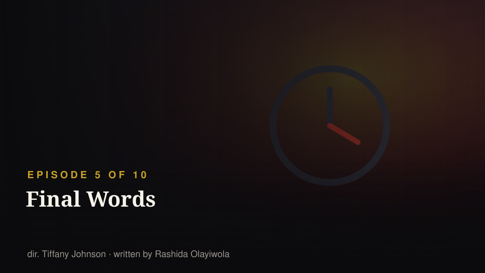
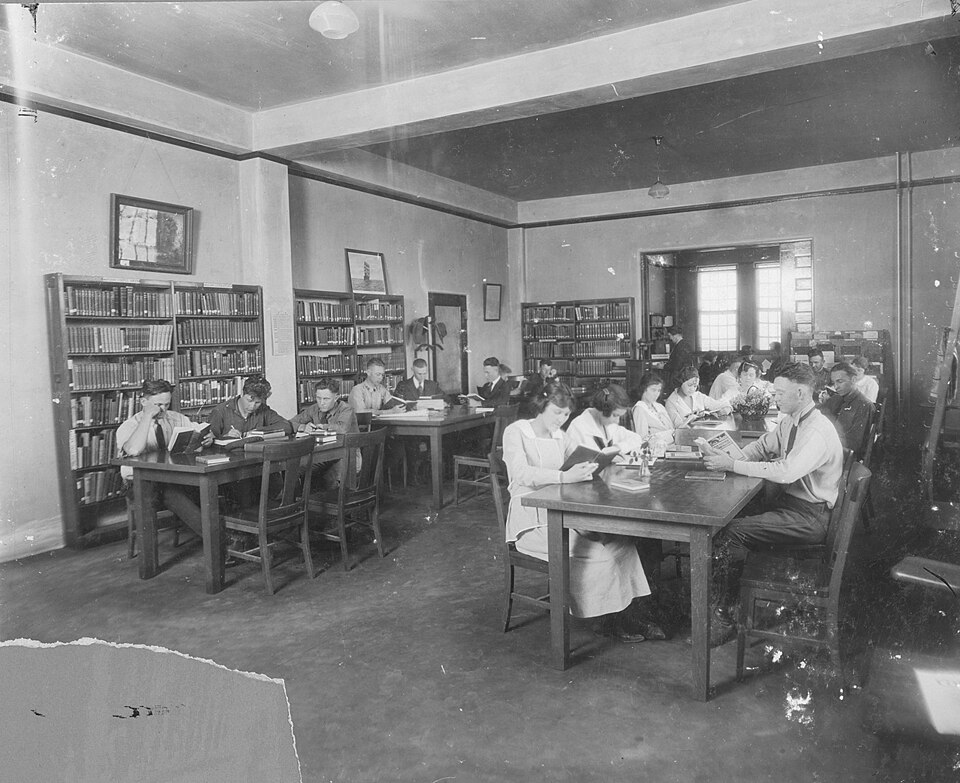
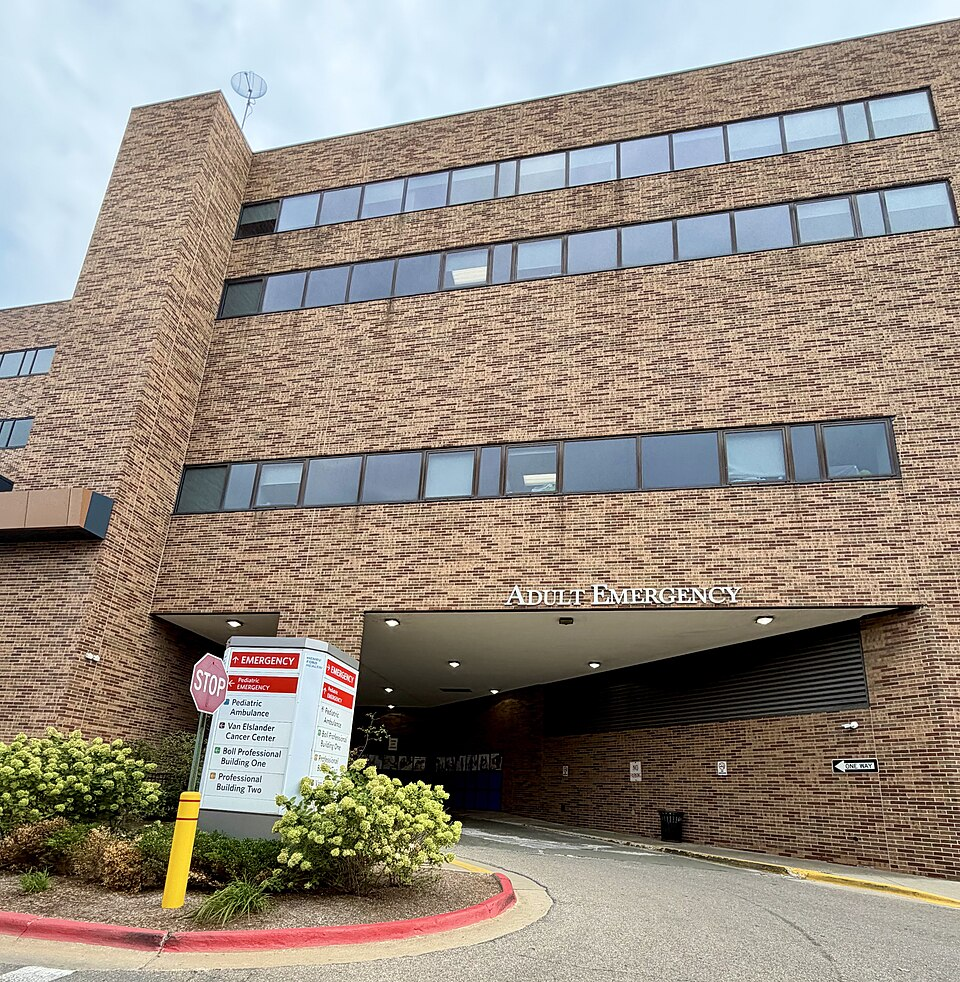
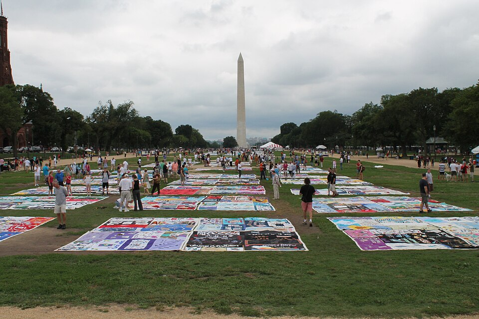
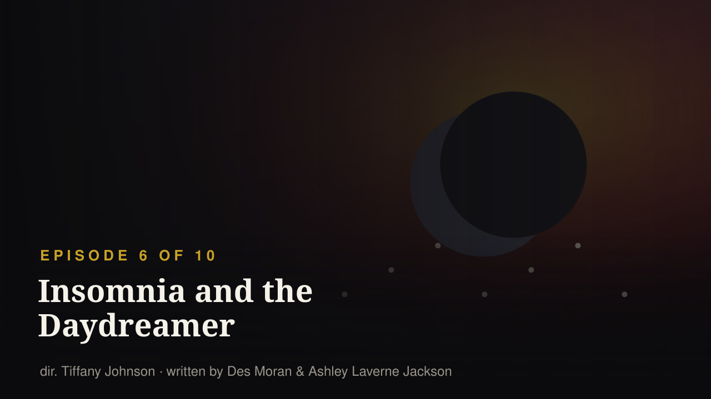
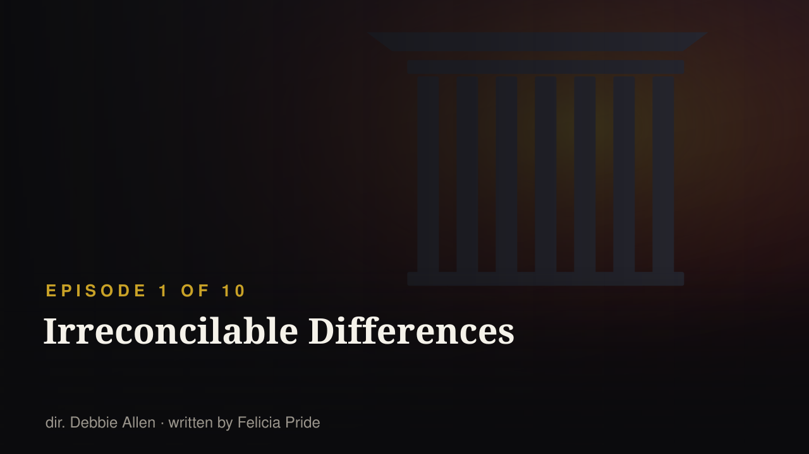
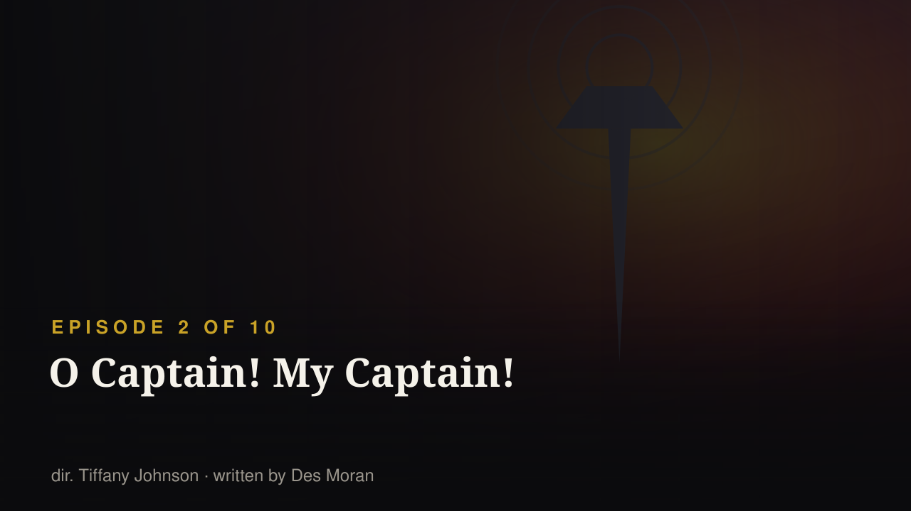
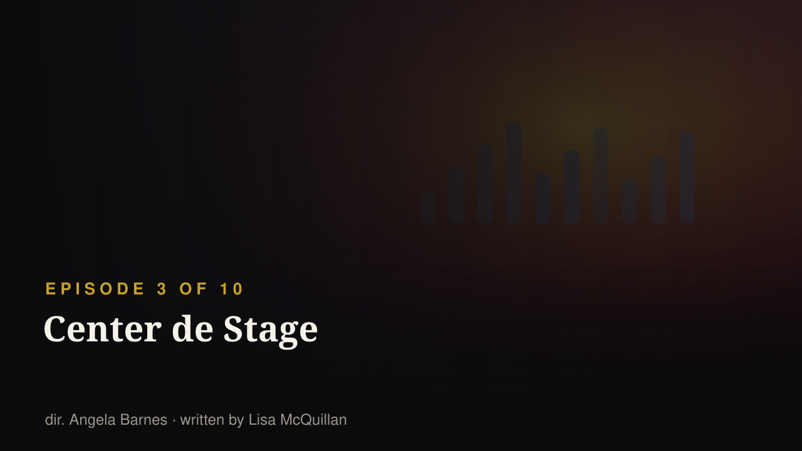
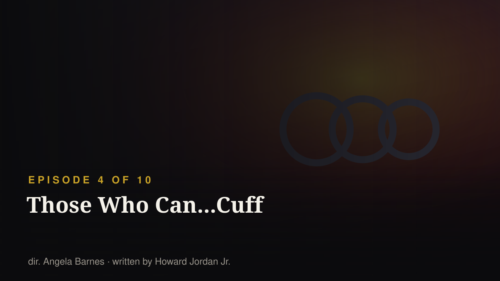
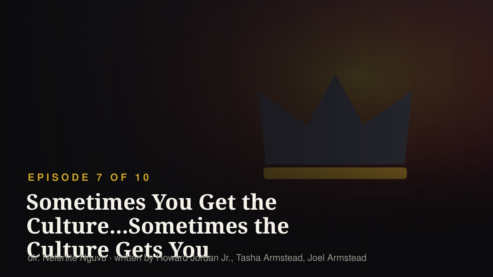

EPISODE 5 OF 10 · RELEASED 2026-09-24
Final exams begin and Deborah and the entire group are overwhelmed by academic pressure. Different members of the group struggle with the expectations being placed on them and the possibility that they won't perform as well as they hoped. A more serious crisis then interrupts the finals panic and forces everyone to reconsider what they're worrying about and what actually matters.
S4·E92 — “If I Should Die Before I Wake” · first aired 1991-04-11
A speech-class assignment leads Josie to disclose that she is HIV-positive, and her classmates have to re-examine everything they thought they knew about AIDS. The episode is guest-starred by Tisha Campbell and Whoopi Goldberg.
This is the original's most important hour and the reason this page exists: in 1991 a Black sitcom put a Black woman's HIV diagnosis on prime-time television, in front of a community that was being told the virus was somebody else's. The revival's fifth episode builds the same slot — a crisis that lands in the middle of ordinary student panic — and the whole point of the 1987 series is that the slot must be filled by something that actually matters. We are not claiming the crisis is the same one. We are saying you cannot read the 2026 season seriously without knowing what this slot was used for in 1991.
Sources: Wikipedia — A Different World (2026 TV series) · Wikipedia — List of A Different World episodes · search terms: crisis hospital emergency finals HIV AIDS diagnosis
S1·E12 — “Advise and Descent” · first aired 1988-01-14
During finals week, Denise volunteers for the peer-counselling line, turns out to be good at it, and uses it to avoid a history paper.
Finals week at Gilbert Hall was always a character test rather than a plot: who takes care of whom, and who hides. The revival's fifth episode runs six characters through the same machine at once.
Sources: Wikipedia — List of A Different World episodes · Wikipedia — A Different World (2026 TV series) · search terms: finals exam study grades
S1·E7 — “Sometimes You Get the Bear...Sometimes the Bear Gets You” · first aired 1987-11-19
Denise dreads a visit from her grandfather because she fears she cannot live up to him; it turns out he tried to steal a rival mascot's bear head in 1935 and is still bitter about losing.
The original's very first season already had the joke the revival is built on: the older generation's legend is mostly unforced errors, and the pressure the kids feel is partly inherited fiction. Watch for it in every 'my parents did this' beat.
Sources: Wikipedia — A Different World (2026 TV series) · Wikipedia — List of A Different World episodes · search terms: expectations pressure parents disappoint
Finals, then a crisis that outranks them: the show deliberately puts an ordinary academic panic next to something that actually matters.
The original said it first — S4·E92 “If I Should Die Before I Wake” (1991-04-11)A speech-class assignment leads Josie to disclose that she is HIV-positive; the students must re-examine everything they believed about AIDS. Guest-starred by Tisha Campbell and Whoopi Goldberg.
What is happening nowIn 1991 a Black sitcom told a Black audience the truth about a virus that respectable opinion preferred to attach to somebody else, and paid for it with a prime-time slot. The revival's fifth episode rebuilds the same structure — a crisis interrupting ordinary student panic — and this page's position is simple: that slot is a responsibility, not a genre convention. Whatever the 2026 crisis turns out to be, it is being placed where 1991 put HIV.
Collapsed by default, at the bottom. Kept local — never published wholesale.
subtitles/ and running python3 scripts/import_subtitles.py. Accepted: .srt, .vtt, Netflix .ttml/.dfxp, or a .json export from the Netflix Subtitle Translator userscript cache.



"The aunties" walk into the club — five of them played the same roles forty years ago.

Deborah Wayne starts her freshman year at her parents' college — 39 years to the day after her parents' show premiered.

Deborah speaks her mind in public and gets called out for it. In 1989 the same fight happened over a campus radio show.

Homecoming brings the alumni back — and the original cast back to campus, with Dwayne and Whitley's marriage visibly cracking.

The title is a one-word edit of a 1987 episode. The dating rules underneath it changed completely.
"The aunties" walk into the club — five of them played the same roles forty years ago.

The episode with the heaviest load: the title quotes 1987, Hazel runs for Miss Gilbert Hall like Whitley did in 1988, and the show says something about who Black students are in 2026.
.jpg){kind=link}